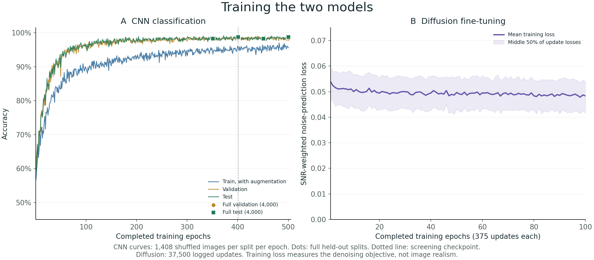
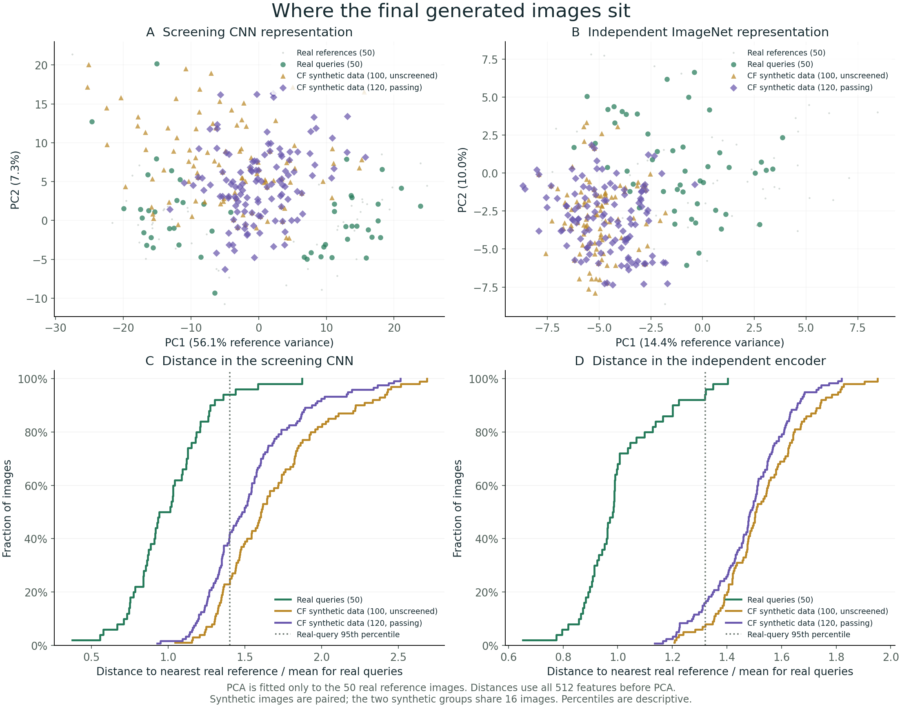
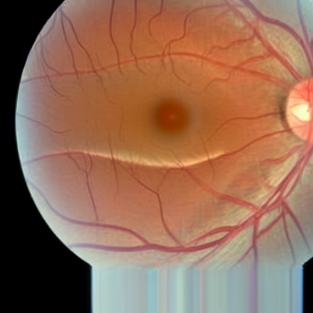
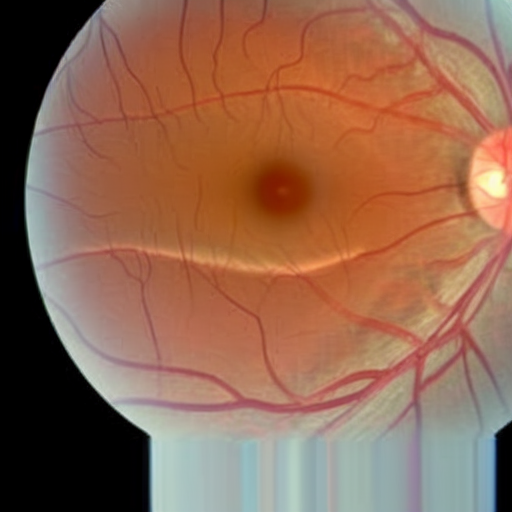
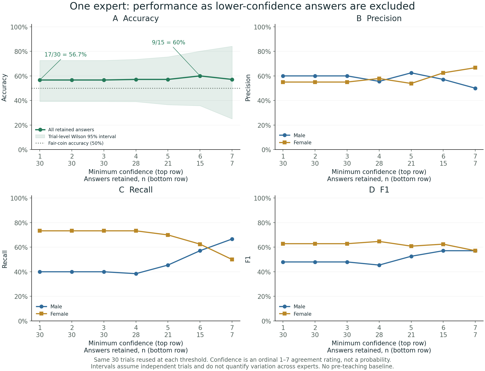
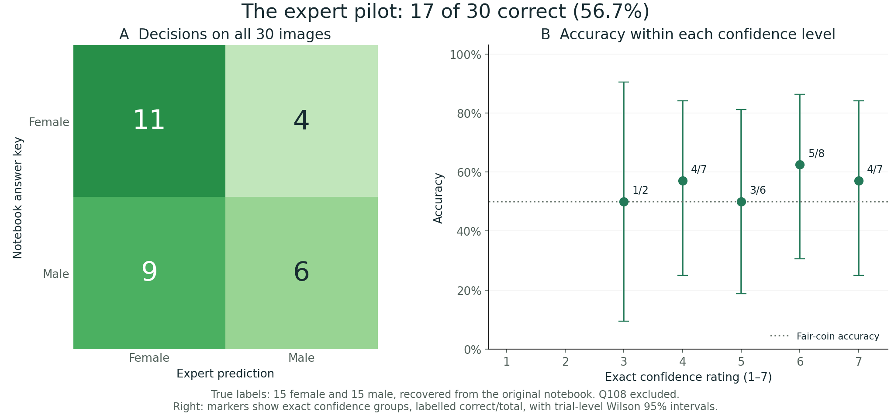

Eoin Kenny · Research notes ·
What can a retina
teach us?
A strong classifier, imperfect synthetic counterfactuals, and an early attempt to turn model behaviour into useful human knowledge.
A model can learn to distinguish retinal photographs labelled male and female with very high accuracy. What would it take to turn that ability into something a person can learn?
This project started with Tiep’s retinal counterfactual experiments. The idea is to generate closely related images under two prompts, one male and one female, and ask an expert to look for differences. The hope is that a visual comparison makes a useful cue easier to notice.
There are three questions to answer along the way. Does the classifier predict the supplied labels accurately? How closely do the generated examples resemble real data? And what can an expert actually learn from them?
Learning from a paired example
Here, “male” and “female” refer to the supplied dataset’s binary labels. The models do not establish a person’s gender identity, and a synthetic image’s prompt is not a verified biological label.
We fine-tune Stable Diffusion on the training images and generate pairs with shared random noise. During the early sampling steps, the source image also supplies spatial self-attention queries and keys to the target image. The target retains its own values and prompt. This encourages the two outputs to share much of their layout while allowing prompt-dependent changes.
Both members are generated images. The left-hand image is not an original patient photograph that has been edited. We retain a pair only when our CNN assigns the intended label to each member, using the same deterministic preprocessing as real-image evaluation.
The reproduction uses Tiep’s saved prompt variants and sampling settings. The original external sampler checkout was unavailable, so we reconstructed it in Diffusers and checked its attention sharing and shared-noise behaviour. This is a documented adaptation of the original experiment.
First, train the two models
The supplied data contain 20,000 images, split into 12,000 training, 4,000 validation, and 4,000 test images. Each split is balanced across the two labels. The classifier uses the original training augmentation, including flips, rotation, cropping, blur, grayscale, and perspective changes. Validation and test preprocessing are deterministic.
The CNN completes 500 epochs. For counterfactual screening, we use checkpoint index 400, after 401 completed epochs, to match the stage of the historical checkpoint. Its full test accuracy is 3,950/4,000, or 98.75%. The final checkpoint reaches 98.775%.

Stable Diffusion completes 100 epochs and 37,500 optimizer updates. It sees only the 12,000 training images. We use the final exponential-moving-average UNet for generation. A lower denoising loss describes progress on the training objective; image quality needs its own evaluation.
Test accuracy was monitored during training, so this is not a pristine once-only test evaluation. We also cannot verify patient independence from the supplied image-level splits.
Where do the generated images sit?
To examine the final checkpoint, we compare 100 real test images, 100 generated images selected before classifier screening, and the 120 images in the 60 passing pairs. Half of the real images form a fixed reference bank. The other half are real queries, providing a real-to-real comparison.
Every query uses the same reference bank. We measure Euclidean distance in all 512 features of the screening CNN. We repeat the analysis with a frozen ImageNet ResNet-18, which was not trained on this retinal task and did not select the passing pairs. PCA provides a two-dimensional picture, fitted only on the real reference images.

Among the passing images, mean nearest-real distance is 1.53 times the real-query mean in the screening CNN and 1.48 times in the independent encoder. Respectively, 69/120 and 101/120 images exceed the real-query 95th percentile. The shift is visible through both representations.
These measurements support concern about distribution shift. They do not establish that every distant image is anatomically invalid, or that a nearby image is clinically plausible. The reference bank is small, and ImageNet features have their own limitations. The useful next question is whether an expert can extract anything sound from these examples.
Look through the counterfactual pairs
There are 30 pairs in each direction. We kept the first passing pairs in the fixed sequence, without visual exclusions. Change the view to blink between the images or inspect amplified pixel differences.
TRY DIFFERENT VIEWS
Pair 01 of 30 · Male → female


Source
Absolute RGB change × gain, clipped to the display range. Bright pixels show larger image changes. This is not a saliency map or anatomical measurement.
Pair generation settings
Source and target share noise and early attention. Scores are from the same CNN used to screen the pair, so agreement is guaranteed by selection.
Download pair auditSynthetic examples of changes in CNN labels. Their anatomical meaning needs expert assessment.
What did an expert take away?
The earlier pilot is the human part of this story. It took place in 2024, before this reproduction, and used the historical teaching material. One expert reported studying around 100 counterfactual images for 30–40 minutes, then classified 30 real retinal images. They reported no previous awareness of features distinguishing the two labels.
The original analysis notebook supplies the scoring key: the first 15 questions are male, and the next 15 female. Q108 is excluded from scoring, matching the original analysis. All 30 predictions and confidence ratings in the saved notebook table match the confirmed expert response in the survey export.
The exact overall result is 17/30 correct, or 56.7%. For answers rated at least 6 out of 7, the result is 9/15 correct (60%). That subset retains half the answers, and its threshold is a post hoc descriptive choice. The two numbers should be kept separate.
The expert predicted female on 20 images and male on 10, although the answer key has 15 of each. Female recall is 73.3%; male recall is 40.0%. That asymmetry is useful context for the overall accuracy.

| Positive class | Precision | Recall | F1 | True examples |
|---|---|---|---|---|
| Female | 55.0% | 73.3% | 62.9% | 15 |
| Male | 60.0% | 40.0% | 48.0% | 15 |
The confidence question asks how strongly the respondent agrees that they are confident. The notebook maps “Neutral” to 4 and “Strongly agree” to 7. These are ordinal agreement ratings, not probability estimates. A rating of 6 should not be read as 60% confidence.
Higher confidence provides little separation in this small sample. At the highest rating, only seven answers remain and four are correct. The 95% Wilson interval for the overall 17/30 result is approximately 39.2%–72.6%, including the 50% fair-coin reference.
See the confusion matrix and accuracy within each confidence level

Features to check against the literature
The expert described the following patterns after studying the historical examples. They also said the generated images were “mostly comparable for the needs of the survey.” This is useful qualitative feedback, alongside the distribution concerns above.
Yamashita et al. (2020) measured fundus features in 112 young Japanese adults. The comparison below separates related observations from matching measurements. It is qualitative, not a statistical correlation.
| Expert observation | Yamashita et al. | Assessment |
|---|---|---|
| Female: “optic nerve” more vertically oval | Discussion describes more tilted, oval discs in women. | Qualitative agreement on shape. |
| Female: paler “optic nerve” | Peripapillary green/blue intensities differ; disc pallor was not measured. | Different region and measurement. |
| Female: more visible pigment-epithelium pattern | Tessellation index is higher in men. | Unresolved: visible “pattern” is not an index measurement. |
| Male: more prominent temporal arcade vasculature | Temporal arteries lie closer to the macula in women. | Related anatomy; prominence was not measured. |
| Male: more retinal light reflexes | Not assessed. | No direct comparison. |
The overlap in disc shape is encouraging, while the other observations require more precise definitions and measurement. Whether the expert received the paper before or after responding has not been established, so this is not evidence of independent rediscovery.
A single expert’s post-teaching performance can motivate a larger study. Establishing a learning effect requires a suitable baseline or comparison condition. The observed feature descriptions also need checking against real images and published measurements before they can support a claim of new biological knowledge.
What would make the next step convincing?
The next evaluation should connect each proposed feature to real retinal images, record how reliably experts can identify it, and test whether teaching that feature improves performance on new cases. Counterfactual pairs give us a way to propose cues. The human evaluation determines whether those cues are useful.
Reproduction details
Source: Tiep’s pinned code and generation records. CNN: ResNet-18, checkpoint index 400. Diffusion: SD 1.5, final EMA UNet, 100 epochs, 37,500 updates, SNR gamma 5. Generation: 512 pixels, 100 Euler ancestral steps, ten historical prompt variants with saved seeds, attention thresholds, and guidance scales. CNN inference: RGB, short-edge resize 256, center crop 256, normalization with mean .5 and standard deviation .5, eval mode. Selection: both intended labels match; no confidence threshold, CLIP filter, or visual exclusions. Stopping: 30 valid pairs per direction, from 352 attempted pairs.